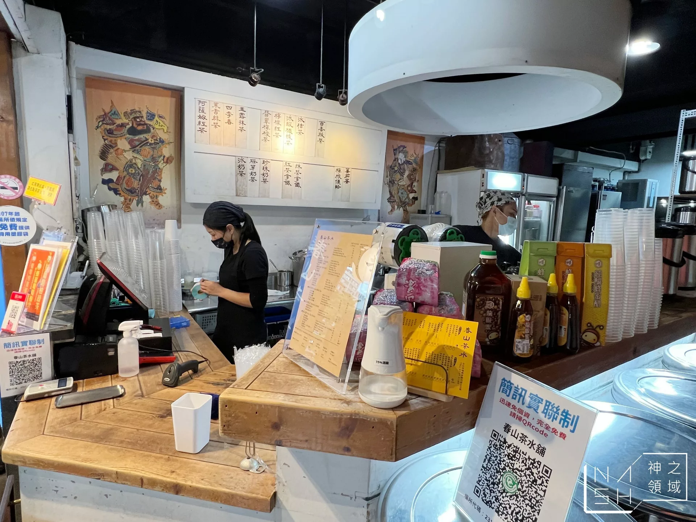

ChunShan Tea Store is a non-chain type of store. There is only one store in Taiwan. In my opinion, it is the best boba tea store ever. However, it's not easy available due to operating hours and limited servings.
To buy some cups of ChunShan tea, 15-30 minutes of wait time is needed, it's much more than simply walk in a tea store on the street. In addtion, ChunShan Tea closed at 3-4 pm. every day, which is earlier than most of tea stores. However, I would still strongly suggest people to try if possible. It's so delicious and it raise the tea drinks to a higher level.
It's worthy to wait and reach a cup of tea at ChunShan Tea. Try it!